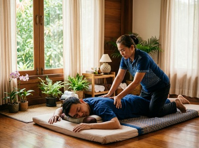

Most people book a massage because something hurts.
A stiff neck, an aching lower back, shoulders that have been creeping up toward the ears for months. But a full body Thai massage works differently from a targeted treatment, and the benefits go well beyond wherever the pain started. When the whole body is worked through in a single session, something more systemic happens. This article breaks down exactly what a traditional Thai massage does from head to toe, and why so many people leave feeling genuinely lighter than when they walked in.
Traditional Thai massage uses acupressure, assisted stretching, and focused work along the body's sen energy lines. These are the pathways where physical and energetic tension builds up and gets released.

A full body session means the practitioner works through all of these lines in order, starting at the feet and moving up through the legs, hips, torso, arms, shoulders, and neck.
The result is different from having just your back done. Tension in your lower back often connects to tightness in the hips and hamstrings. When the whole body is treated in sequence, those connections get untangled rather than just masked.
You can book a full body session online if you want to experience this for yourself.
One of the most well-documented benefits of Thai massage is its effect on flexibility. Research in the Journal of Physical Therapy Science found that Thai massage improved flexibility in healthy subjects.
This makes sense. The treatment involves guided passive stretching that takes joints and muscles through their full range. Most people never do this in daily life or even in a gym session.
For anyone who spends the working week at a desk in Glasgow, this matters. Prolonged sitting tightens the hip flexors, shortens the hamstrings, and reduces how far the spine can rotate. A full body Thai massage tackles all three in a single session.
The stretches used in traditional Thai massage come from the same principles as yoga. The difference is that they are performed passively. You get the benefit without needing to be flexible enough to do them yourself.
A 2015 study found that Thai massage reduced levels of salivary alpha-amylase — a measurable stress marker — more than simply resting for the same amount of time. Lying down for an hour does help. But a Thai massage session does more.
Part of the reason is physical. Working through muscle tension activates the parasympathetic nervous system, shifting the body out of its stress response. There is also something simpler at play — a practitioner's sustained, skilled attention signals to your body that it is safe to let go.
Most people reach a level of stillness during a session that they rarely find elsewhere. At Glasgow Thai Massage, Maliwan and Jariya bring over 20 years of practice to every session. That experience means the work is attentive and responsive, not mechanical.
Thai massage improves circulation through a mix of compression, stretching, and rhythmic movement across the whole body. Better blood flow means oxygen and nutrients reach muscle tissue more easily. This is why many clients feel energised rather than drowsy after a full body session.
A 2018 trial comparing Thai massage and Swedish massage in tired participants found that those who received Thai massage felt mentally sharper and physically re-energised. This is one of the things that sets Thai massage apart from more sedative treatments.
A Thai oil massage can lean further toward deep relaxation, but the traditional full body format tends to leave people alert and clear-headed.
For people dealing with ongoing muscle tension, chronic back pain, or full-body stiffness that builds over weeks of overwork, a full body session tackles the problem at scale. The sen line work releases deep tension across the whole body. The joint work helps restore movement that poor posture and repetitive strain have worn down over time.
If lower back pain or sciatica is part of the picture, it is worth reading about massage for lower back pain for more detail on how targeted work can combine with a full body approach. A Thai sports massage is also worth considering if you are managing a specific injury alongside general tension.
The case for a full body Thai massage is straightforward. The body does not store tension in one place in isolation, and treating it one spot at a time only goes so far.
A full session gives your whole system the chance to reset. Most people find the effects last longer than a shorter or more localised treatment. If it has been a while since you gave your body that kind of attention, it is probably overdue.
A full body Thai massage works from the feet upward through the entire body. Your practitioner uses acupressure, assisted stretching, and joint work along the body's sen energy lines. You stay fully clothed throughout, lying on a mat while the therapist guides your body through a sequence of movements and applies pressure to key points. Sessions typically run 60 to 90 minutes for a full body treatment.
Thai massage is done fully clothed on a floor mat. It combines assisted stretching with acupressure, which makes it more active than a Swedish or oil massage. Swedish massage uses gliding strokes and kneading with oils and tends to be more relaxing and sedative. Thai massage often leaves clients feeling energised rather than sleepy. It brings together the benefits of massage and passive movement similar to yoga.
For general wellbeing and stress management, once or twice a month is enough for most people to notice a lasting difference. If you are dealing with chronic tension, poor posture from desk work, or ongoing muscle tightness, weekly sessions for the first month will build on each other more effectively. Your therapist can advise based on what they find during your first session.
Yes, and it is particularly useful for them. The stretches in Thai massage are passive — the therapist does the work while you relax into the position. You do not need any existing flexibility. The session is adjusted to your current range of motion, so there is no strain involved. Over time, regular sessions will improve your flexibility, which is one of the reasons people book regularly rather than just as a one-off treatment.
Some mild muscle tenderness in the 24 hours after a full body session is normal, especially if it is your first time or if you have significant tension built up. It is similar to how you feel after a good stretch session. Drinking water after your treatment helps, as does avoiding intense exercise for a few hours. Most people find the tenderness passes quickly and is replaced by a lasting sense of ease and mobility.